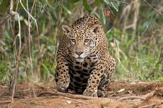
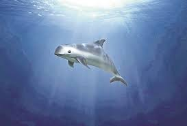
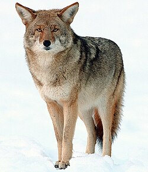
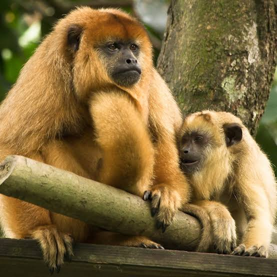
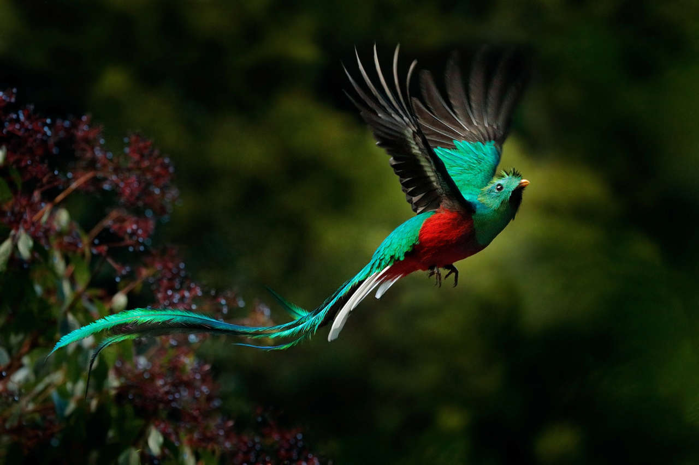

Fauna de México
Mamíferos




1. Jaguar (Panthera onca):
- Hábitat: Selvas tropicales y áreas húmedas del sureste de México.
- Características: Es el tercer felino más grande del mundo. Su piel tiene manchas características que le permiten
camuflarse en su entorno.
2. Vaquita marina (Phocoena sinus):
- Hábitat: Exclusivamente en el Golfo de California.
- Características: Es el cetáceo más pequeño y se encuentra en peligro crítico debido a la pesca ilegal.
3. Coyote (Canis latrans):
- Hábitat: Se adapta a diversos ecosistemas, desde desiertos hasta bosques.
- Características: Son cazadores oportunistas y pueden vivir en grupos o solos.
4. Monos aulladores (Alouatta spp.):
- Hábitat: Selvas y bosques tropicales del sur.
- Características: Conocidos por su fuerte vocalización, que puede escucharse a varios kilómetros de distancia.
Aves
1. Quetzal (Pharomachrus mocinno):
- Hábitat: Bosques nubosos de las regiones montañosas del sur.
- Características: Su plumaje es vibrante, con un cuerpo verde iridiscente y una larga cola.

2. Águila real (Aquila chrysaetos):
- Hábitat: Montañas y áreas abiertas.
- Características: Es un ave rapaz poderosa que se alimenta principalmente de mamíferos pequeños.
3. Mariposa monarca (Danaus plexippus):
- Migración: Viaja desde Canadá hasta México cada invierno.
- Características: Su ciclo migratorio es uno de los fenómenos naturales más impresionantes del mundo.
Reptiles
1. Tortuga laúd (Dermochelys coriacea):
- Hábitat: Océanos abiertos, pero anidan en playas mexicanas.
- Características: Puede pesar hasta 700 kg, siendo la tortuga más grande del mundo.
2. Serpiente de cascabel (Crotalus spp.):
- Distribución Se encuentra en diversas zonas, desde desiertos hasta montañas.
- Características: Su cascabel le permite advertir a posibles depredadores o amenazas.
Anfibios
1. Axolote (Ambystoma mexicanum)
- Hábitat: Lago Xochimilco en la Ciudad de México.
- Características: Es famoso por su capacidad de regenerar partes del cuerpo y por permanecer en su forma larval durante toda su vida.
Insectos
1. Escarabajo pelotero (Scarabaeinae):
- Importancia ecológica: Ayudan en la descomposición de excrementos y fertilizan el suelo.
2. Mariposa Morfo azul (Morpho peleides):
- Hábitat: Bosques tropicales.
- Características: Conocida por su impresionante color azul brillante, que es una estrategia para desviar depredadores.
Ecosistemas
México cuenta con varios ecosistemas, como selvas tropicales, desiertos, montañas y costas, cada uno albergando especies
únicas.
La diversidad biológica está amenazada por la deforestación, la urbanización y la contaminación, lo que
hace que la conservación sea crucial.
LOGIN